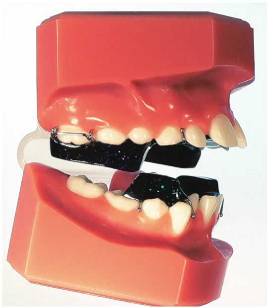

نسخه استخراجشده؛ ترجمه یا تأیید علمی انجام نشده است. وضعیت: captured
دستگاه فانکشنال مندیبل را در موقعیت جلوتر نگه میدارد. این جابهجایی، کشش عضلات و بافت نرم را تغییر میدهد و به سه دسته اثر میانجامد:
| اثر | سهم |
|---|---|
| دندانی: پروکلاین شدن ثنایای پایین، رتروکلاین شدن ثنایای بالا، حرکت مزیالی مولر پایین | سهم بزرگتر |
| اسکلتی: افزایش طول مندیبل و بازسازی کندیل و فوسا | سهم واقعی اما محدودتر |
⚠️ بخش زیادی از کاهش اورجت در این دستگاهها، دندانی است نه اسکلتی — این را در توضیح به والدین صادقانه بگو.

Twin Block پرکاربردترین دستگاه فانکشنال متحرک است و دلیلش عملی است، نه نظری:
💡 در برابر اکتیویتور کلاسیک که یکتکه و حجیم است و اغلب فقط شبانه استفاده میشود، Twin Block ساعات مؤثر بهمراتب بیشتری میدهد — و از آنجا که اثر ارتوپدیک به مدت زمان بستگی دارد، همین تفاوت نتیجه را میسازد.
👉 پیشروی مرحلهای هم مزیت دارد: جلو بردن ناگهانی و زیاد مندیبل، هم ناراحتکننده است و هم لزوماً پاسخ بیشتری نمیدهد. پیشروی تدریجی، پذیرش بیمار را بالا میبرد.
⚠️ مرحلهی تراشیدن بلوکها را حذف نکن؛ بدون آن، بایت خلفی باز میماند.
پیشنیازها — هر سه باید برقرار باشند:
عوارض و ملاحظات: اختلال موقت گفتار و جویدن، افزایش بزاق در روزهای نخست، و احتمال باز شدن بایت خلفی که باید مدیریت شود.
👉 نکتهای که باید از ابتدا به خانواده گفت: پس از فاز فانکشنال، تقریباً همیشه یک فاز درمان ثابت برای فینیشینگ لازم است. دستگاه فانکشنال رابطهی فکها را اصلاح میکند، اما موقعیت تکتک دندانها را نه.
⚠️ اگر این را از ابتدا نگویی، خانواده پایان فاز فانکشنال را پایان درمان میپندارد و شنیدن «حالا باید براکت بگذاریم» را بهعنوان تمدید غیرمنتظره تلقی میکند.
💡 عوارض روزهای نخست تقریباً همیشه گذرا هستند؛ توضیح دادنشان پیش از تحویل دستگاه، احتمال رها کردن آن را در هفتهی اول بهشدت کم میکند.
نوع سؤال: ساخت کلمه · 4 خانه
حروف منبع: و · ن · ی · ت